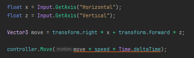
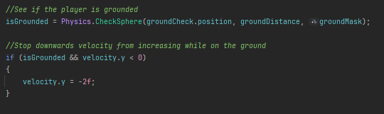
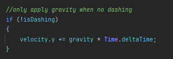
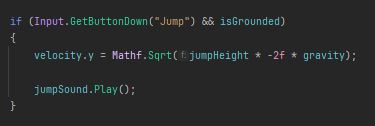
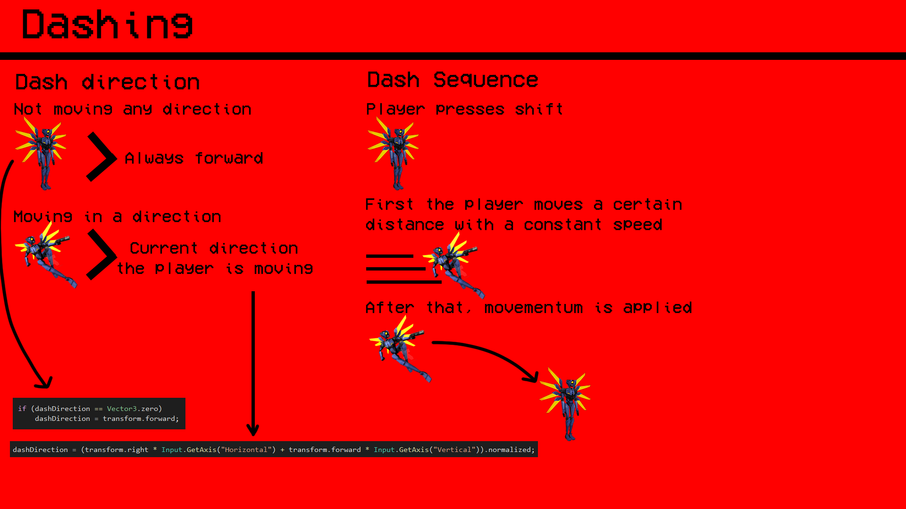
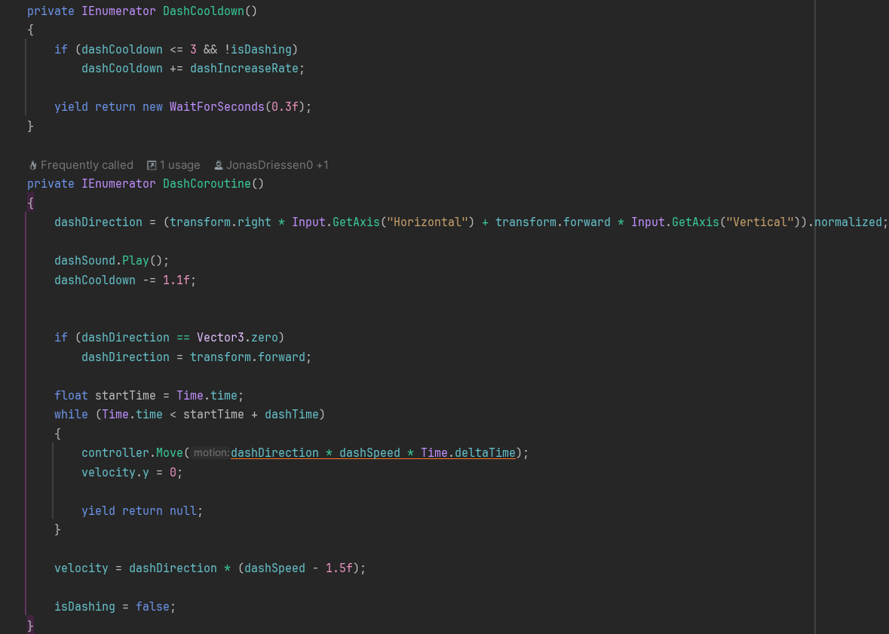

Ultrakill Vertical Slice
Vertical slice project aiming to recreate gameplay of the fast paced shooter Ultrakill
About the Project
This was a group vertical slice project we developed for school. We had approximately 3 months to create a vertical slice of the first part of the first level in the game we chose: Ultrakill. The group consisted of 4 developers and 3 game artists, with us being in control of who did which parts.
My Contribution
I contributed to several key aspects of the project:
- Implementing the entire movement system
- Creating a dash ability
- Developing the shooting system
- Making the UI functional
- Designing and implementing the start sequence of the level
We managed to successfully finish our project within the deadline, although it was pretty close since this was quite a complex project.
What is Ultrakill?
Ultrakill is a very fast-paced movement shooter in which you traverse through various linear levels. I personally really like the game and had played it a bit before starting this project. Since I was tasked with creating the movement and shooting functionality, I really wanted to capture that fast-paced action that Ultrakill manages to deliver so well.
Movement System
The movement system includes WASD movement, jumping, and a complex dash ability. Here are some key components:
WASD movement implementation
Checking if the player is grounded
Applying gravity to the player
Jumping implementation
Dash Ability
The dash ability was one of the most challenging parts of the movement system to implement. Here's a visual explanation of how it works:
And here's the actual code implementation of the dash sequence:
Outcome
I am extremely pleased with how this project turned out, and I am really proud of my work on this project. We successfully recreated the fast-paced, intense gameplay of Ultrakill within our vertical slice, capturing the essence of the original game.